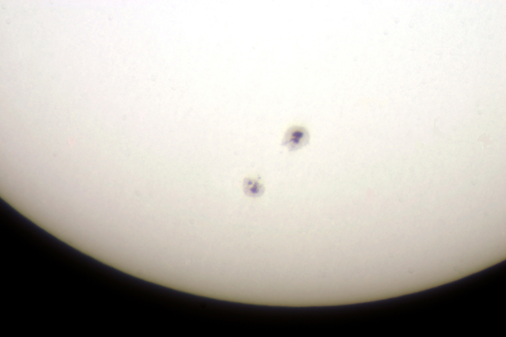

Sunspots
While the Sun is recovering from a minimum in its 11-year activity cycle, that doesn't mean there's nothing to see. Here's a shot Mike Roman took of sunspots through the Fuertes refractor. The telescope was heavily protected to make sure the intense sunlight didn't damage the telescope, the camera, or anybody looking through it; do NOT try to look at sunspots yourself without a proper solar filter.
